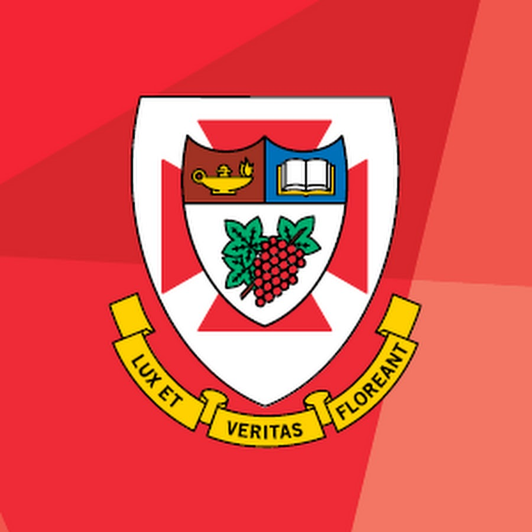
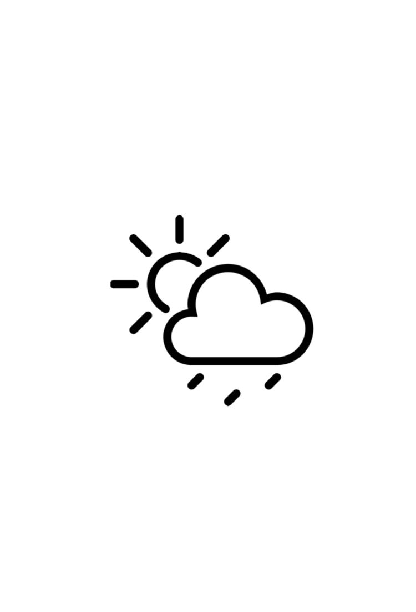

I am Abhimanyu Vohra,
A creative Systems Analyst and Software Developer
About Me
I am Abhi aka Abhimanyu Vohra.
I work as a Systems Analyst at IG Wealth Mangement.
I analyse and conceptualize the designed solutions, work with the Systems Architects,
Vendors, Software Developers and Quality Assurance/Testing to achieve stakeholder
objectives through effective deployment of technology.
I have experience working in Full-Stack development annd design.
Creating simple yet
effective software solutions is my passion.
Striving to learn and develop new skills and become a better analyst and developer.
Work Experience
IG Wealth Management
Systems Analyst
Nov 2023 - Present
- Experience with liaising with business collaborators to align IT solutions with business objectives, ensuring system designs meet organizational needs.
- Defining and documenting systems requirements that are scalable, maintainable, and adaptable to high-volume environments, ensuring flexibility and sustainability.
- Proficient in conceptualizing and implementing IT systems, with a focus on supporting process automation, record-keeping, and streamlining organizational workflows.
- Collaborate with system architects, developers, QA teams, and stakeholders to design and deploy robust technical solutions.
- Strong ability to bridge the gap between business needs and technical solutions, ensuring that system implementations meet both operational and strategic objectives.
- Adept at identifying opportunities for process automation to reduce manual workloads, resulting in increased operational efficiency and streamlined internal processes.
The University of Winnipeg
Technical Lead
Sep 2022 - Apr 2023
- Collaborated with a team of six people to enhance CS Department Review Committee website and make it deployment ready.
- Improved efficiency by unifying and integrating Computer Science Department websites.
- Enhanced accessibility and user experience by improving UI design.
- Performed unit testing, user testing code reviews to ensure proper functionality.
- Gathered user requirements and documented them in System Study Review, Detailed Design Review, and Project Completion Report.
- Maintained regular communication with the IS Director and Project Sponsors to understand user requirements and provide updates on project progress.
- Delivered a comprehensive presentation upon completion.
- Tech Stack: Node.js, Microsoft Azure, JavaScript, MySQL, HTML, CSS, GitHub
ON24 Inc.
Intern Software Engineer
May 2022 - Aug 2022
- Improved client app integration with ON24 web apps
- Performed unit testing to ensure fully functional application and to maintain integrity.
- Maintained constant communication with team Manager, to give progress updates and resolve issues.
- Developed a fully functional mobile application for testing integration.
- Tech Stack: Flutter, Android, Swift, JavaScript, Git
Cencadian Educational Inc.
Software Engineering Intern
Jan 2021 - Aug 2021
- Developed a mobile application to help navigate pregnant women dealing with drug abuse to the closest public health authority.
- Maintained constant communication with Dr. Victor Balogun and Ayodeji Oludapo to ensure application requirements.
- Utilized Google Maps API to analyse map data to generate optimal routes.
- Worked in collaboration with another developer to ensure full application functionality, with his vital monitoring application.
- Tech Stack: Flutter, MongoDB, Google Maps API, Bootstrap, REST API, Firebase, Docker, GitHub
Education
The University of Winnipeg
B.Sc. Honours - Applied Computer Science
4-Year
SEP 2019 - OCT 2023
Relevant Courses:
- Data Structures & Algorithms
- Computer Architecture
- Information Systems
- Advanced Database Systems
- Principles of Project Management
- Computer Security & Privacy
- Applied Parallel Programming
- Computer Network
- Advanced Internet Programming
- Scientific Computing with Python
RECENTLY
I've worked on
-
DRC Hub 2.0
Web Development
A website designed to handle administrative functions of the Department Review Comittee. Built for the Compute Science department at the University of Winnipeg. Deals with course outline reviews, grade reviews, academic misconduct filing, and much more.
Tech Stack: Node.js, Express.js, MySQL, JavaScript, HTML, CSS.
-
Minimal Weather App
Mobile App Development
Weather App that is built for mobile and desktop devices. Ability to search for the location and get accurate weather data.
Tech Stack: React.js , Node.js, Express.js, MySQL, JavaScript, HTML, CSS.
Let’s Connect
If you liked what you saw, or just talk tech
Get in touch